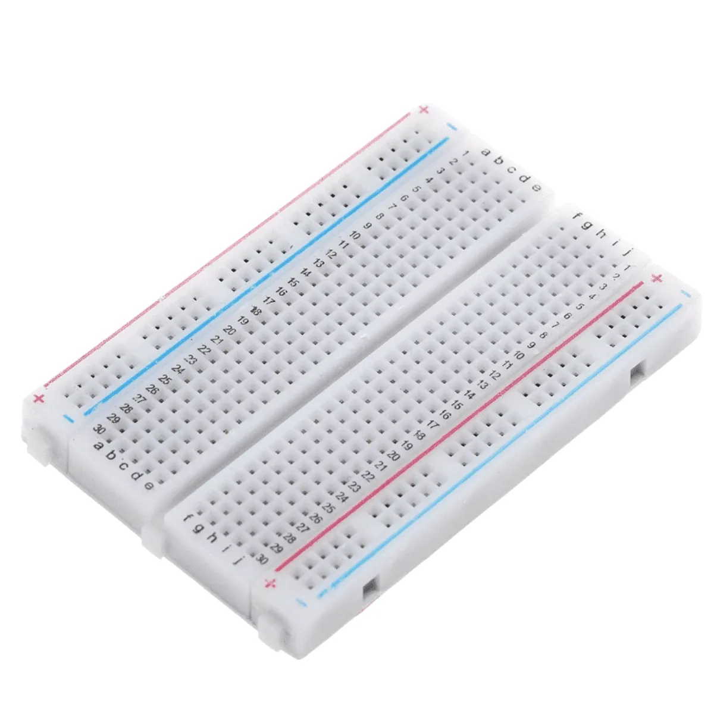
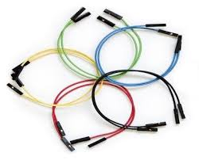
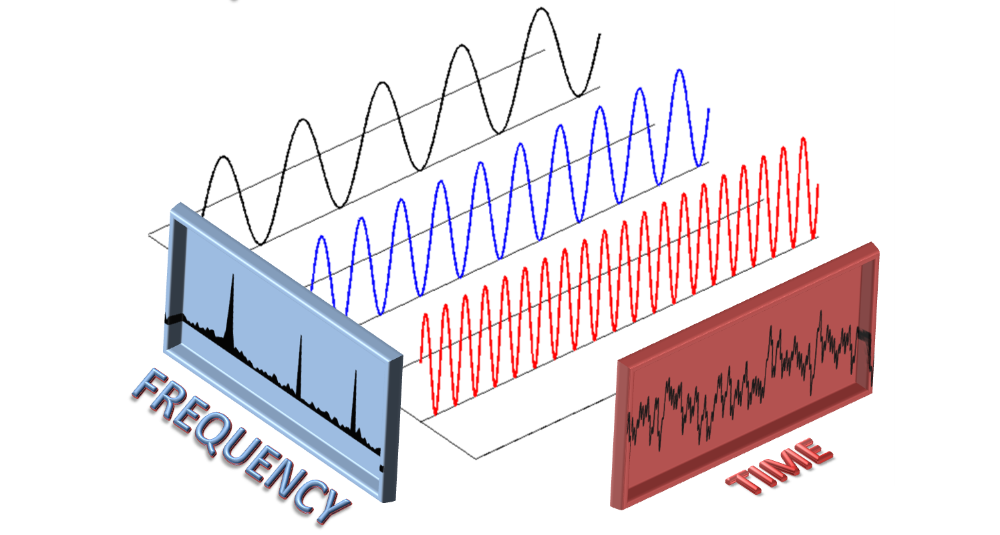
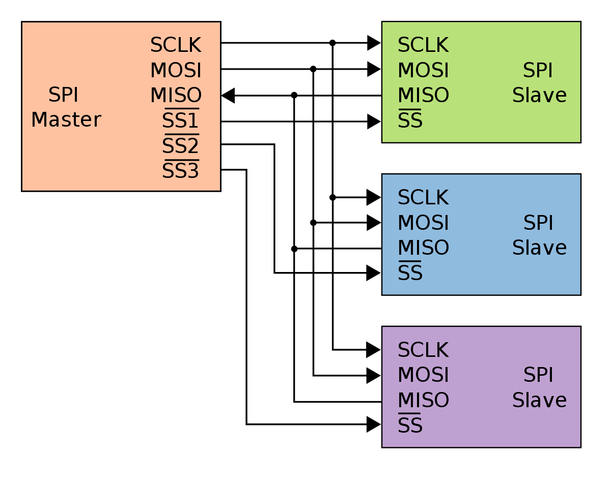

Componentes Utilizados

Arduino Uno Blackboard (R3)
Quantidade: 1

Módulo de LED MAX7219 32x8
Quantidade: 1

Módulo de Microfone MAX4466
Quantidade: 1

Breadboard (Protoboard)
Quantidade: 1

Jumpers (Cabos de Conexão)
Quantidade: 16
Plataformas e Aplicativos

Biblioteca MD_MAX72XX
Onde encontrar

Biblioteca arduinoFFT
Onde encontrar
